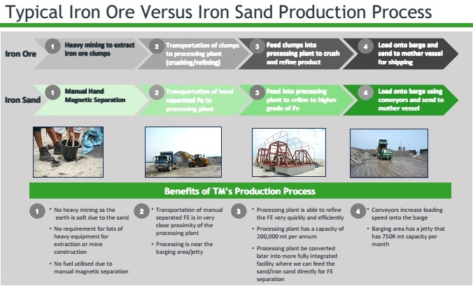

Investments
Tricor Plc implemented a new investing policy which was approved at the Annual General Meeting of the Company held in October 2011. The investing policy can be found here :
Tricor Plc adopts a passive management approach to its investments, with management responsibility delegated to the Board of the investee company, who have full autonomy to manage the company. Further information on some of the investments can be found below :
Tricor Environmental Pte Ltd
Tricor Environmental Pte Ltd ("TEPL") is a wholly owned subsidiary of Tricor plc (AIM: Tricor) which is a UK registered investment holding company quoted on the London Stock Exchange's Alternative Investment Market ("AIM") that focuses on investment opportunities within the natural resources sector.
TEPL is currently developing a portfolio of sand mining operations in South East Asia, with the first two projects in the Philippines. TEPL has signed exclusive master supply purchase arrangements with Bluemax Tradelinks Inc, and CST-Bluemax Subic Inc. for two sites – one at the Bucao River at Zambales, Philippines (the "Porac Site") and another at the Maloma River at Zambales, Philippines (the "Maloma Site").
In addition to trading the sand excavated from the Porac and Maloma sites, TEPL's activity at the two sites will have significant environmental and local community benefit. The Bucao and Maloma rivers are both heavily silted as a result of the Mount Pinatubo eruptions in the 1990's. Due to the heavy siltation of these rivers there is a no outlay for excess water during the monsoon season, which causes extreme flooding of the area. This has been highly destructive to the local community; however, Tricor's removal and purchase of the sand should help to alieviate the flooding problems over time.
The Silted Bucao River
Sand is Piled Onto Stockpiles by Excavators
Sand is Loaded Onto Trucks
Trucks Travel 50m To The Barge
Truck Enter Barge
Sand is Unloaded Onto Barge
The Area During Operational Season
The Area During Operational Season
The Area During Operational Season
The Area During Operational Season
Tricor Minerals Pte Ltd
Tricor Minerals Pte Ltd ("TM") is a subsidiary of Tricor plc (AIM: Tricor) which is a UK registered investment holding company quoted on the London Stock Exchange's Alternative Investment Market ("AIM") that focuses on investment opportunities within the natural resources sector. TM will build, own and operate processing plants that extract minerals from sand. TM will operate in the Bucao River, in the Zambales region of the Philippines, and will focus on the extraction of iron sand, which has been identified in the region. Iron sand contains a high concentration of iron ore, and is used in the production of steel.
